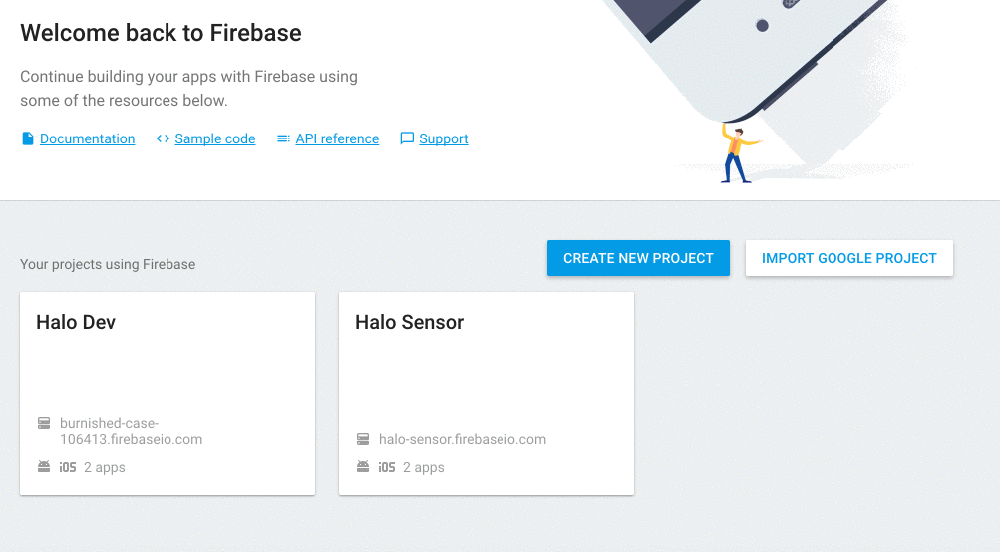

Detailed APIs
Enable notifications
The notification system is built in in the SDK based on the FCM framework (Firebase Cloud Messages), which is built on the default system to receive notifications in the browser.
Warning: Since FCM uses service workers, HALO cannot receive notifications in those browsers that does not support service workers OR on domains which don't have a ssl certificate.
Based on the HALO backend you can send many data in the notifications and segment depending on the segmentation of the users present in the system. In this guide we will show you how to enable the notifications on the SDK and how to handle some custom actions on those notifications.
Step 1. Configure a FCM project
First of all we need to create a FCM project in the Firebase Console. If you already have an FCM project configured you can go directly to 3. If you already have an app with the given package configured go to 6.
- Click on 'Create New Project' button.
- Fill in the project name and the country/region.
- Enter the project and click on 'Project settings'.
- Go to the Cloud messaging tab and you will see the Project credentials.
- Write down the server key. It looks like 'AIzaSyAtN64Y0**********-*************'
- Write down the Sender ID. It looks like '10421********'

Step 2. Add the Server key to HALO
Take the Server API Key obtained in the previous step and put it in the administration console of HALO.:
- Do login in HALO as an admin.
- Go to your apps.
- Select the application you are enabling the push notifications to.
- Update the app filling the FCM key field with your server key.
Step 3. Enable the notifications in the SDK
To start using the notifications, you apply the basic configuration for the Push module based on your HALO project.
To enable the notifications inside your app you have to import the Push module. Once done, you have to apply the basic configurations for the Push module by running the setup() function to initialize the Push module.
Here you have to provide the firebaseSenderId you can find in the Firebase Console, and set the serviceWorker path, by default it is 'firebase-messaging-sw.js'.
import { push } from 'halo-sdk';
push.setup({
firebaseSenderId: 'YOUR_FIREBASE_SENDER_ID',
serviceWorkerPath: '/YOUR_SERVICE_WORKER_PATH.js'
})
React to a notification
In HALO we support two different notification types. Normal notifications and silent notifications. Normal notifications includes the UI that shows the user a notification was received, while silent notifications only notify you in a callback to perform some background work.
With this silent notifications the SDK will not display any UI but also will not perform any action. As a developer you have to put an entry point so we can send you the information received. In this guide we tell you how to do it. Follow the instructions below to add a listener.
1. Create the listener
This instance will receive the notifications for those notifications that will be listened with the listenNotifications(). Here you can check an example:
push.listenNotifications();
2. Attach a custom callback to the notification listener for silent notifications
You have to attach a callback to listen silent notifications, by default those notifications won't be showed.
push.listenNotifications(function (notification) => {
if (notification.isSilent) {
// TODO^
// Do something with the silent notification
} else {
push.showNotification(notification);
}
})
Customize notification displayed
Behind the scenes, when the server sends the notification to the Google Firebase Services, it can send information in two ways:
- Providing a parsed data payload: This parses the notification automatically and you cannot handle this behaviour.
- Providing a raw data payload: The data payload allows you to handle whatever action you need.
In JavaScript, the SDK always shows the notifications using the showNotification() method.
To modify something in the notifications, we provide a option to add your own callback, so you can handle or add behaviour to this notification just by adding a callback to the listenNotifications() function. Here you have the example guide to put an icon on the notification.
Note: If you don't call the showNotification() function inside your callback, the notification will not be displayed." %}
sample 1: Create custom callback
We are providing a custom implementation of the icon callback:
import { push } from 'halo-sdk';
push.listenNotifications((notification) => {
const newNotification = notification;
newNotification.icon = 'http://www.iconninja.com/files/814/844/1019/tower-of-hercules-icon.png';
push.showNotification(notification);
})